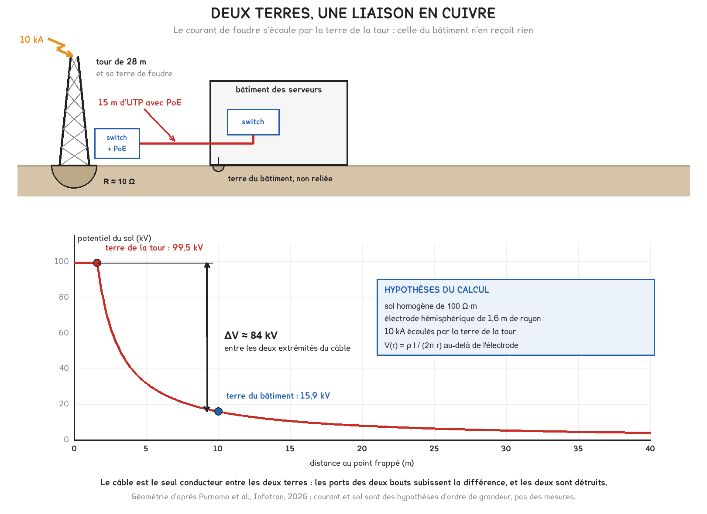
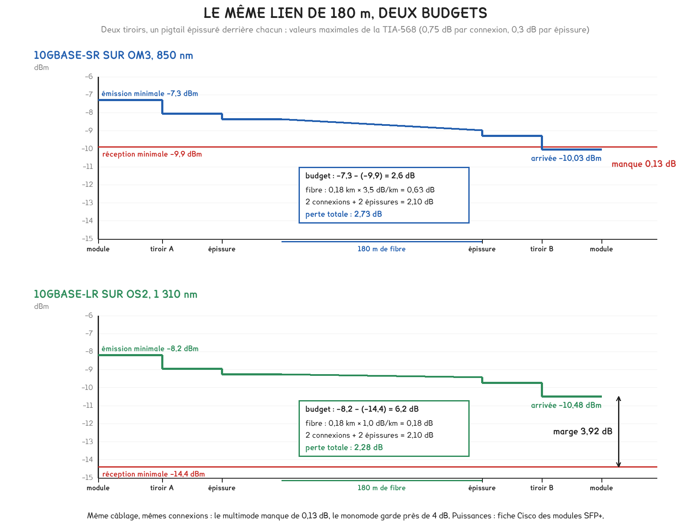

Document de formation du professeur — ne pas diffuser aux étudiants
Formation du professeur · BTS FED option C
Deux câbles d'écran qui privent de 4G les abords de la gare de Lyon, un ruban LED qui brouille un radioamateur, quatre équipements réseau détruits entre deux terres, les liens qui échouent au testeur et la loi de 2008 qui fait entrer la fibre dans chaque logement neuf. Un écran géant conforme aux normes, qui brouillait pourtant une station 4G à Rennes, montre où s'arrête le raisonnement par produit.
Savoirs travaillés
Un ministère parisien, un dressing de Loire-Atlantique, une tour indonésienne, le guide d’une association de techniciens du câblage, un article du code de la construction : ces cinq cas racontent la même histoire. Un signal ou un courant emprunte un chemin que personne n’avait prévu pour lui, ou n’emprunte pas celui qu’on avait prévu.
La compatibilité électromagnétique donne à ce constat son vocabulaire, une source, un couplage, une victime, et il vaut au-delà des brouillages radio. Dans un câble à quatre paires, la paire qui émet est la source, le raccordement détorsadé le couplage, la paire voisine la victime. Entre deux bâtiments, la foudre est la source, la terre le couplage, les ports Ethernet les victimes.
Le technicien ne choisit presque jamais la source ni la victime, qui appartiennent au programme du bâtiment. Il choisit le chemin : le câble, son cheminement, son raccordement, sa terre et le média lui-même. La fibre est le seul média qui supprime un couplage par construction.
Câbler, c’est décider des couplages. Séparer les cheminements, garder la torsade jusqu’au contact, reprendre l’écran sur tout son pourtour, relier les masses, passer en fibre entre deux terres : chaque règle de pose de cette page supprime ou réduit un chemin, aucune ne supprime une source.
Les trois premiers cas relèvent de la CEM et servent DOMA7 et DOMB7 ; le quatrième, la certification, sert DOMA8 et DOMB8 ; le cinquième, la fibre du logement, sert DOMA8.
Selon l’Agence nationale des fréquences (ANFR), qui a publié l’enquête le 15 juillet 2024, un opérateur a signalé à la fin de 2023 un brouillage de sa 4G dans la bande des 800 MHz, autour de la gare de Lyon, à Paris. Les agents de l’Agence ont remonté le signal jusqu’au dernier étage du ministère de l’Économie, voisin, à une soixantaine de mètres de l’antenne : deux câbles DisplayPort vers VGA reliant des ordinateurs à leurs écrans, insuffisamment blindés selon l’ANFR. Le responsable informatique les a débranchés, ce qui a supprimé le brouillage, puis a fait remplacer tous les câbles identiques du service.
La source désignée est un câble. Un cordon d’écran transporte des signaux numériques dont les fronts contiennent des harmoniques jusqu’à plusieurs centaines de mégahertz. Tant que l’écran est continu et raccordé sur tout son pourtour aux deux connecteurs, le courant de retour circule à l’intérieur. S’il est interrompu, mal serti ou relié par un simple fil, une partie du courant circule sur la face extérieure : ce courant de mode commun fait du cordon une antenne. Un cordon DisplayPort vers VGA loge de plus un convertisseur actif dans son connecteur.
λ = c / f, soit λ ≈ 300 / f
Un conducteur rayonne dès que sa longueur atteint le dixième de la longueur d’onde ; à la demi-longueur d’onde, il résonne.
À 800 MHz, λ vaut 37,5 cm : un cordon de 1,8 m en mesure près de cinq, et rien n’est à ajuster pour qu’il rayonne. Le même calcul éclaire un cas publié par l’ANFR le 20 décembre 2019 à Lodève, dans l’Hérault : un câble HDMI défectueux entre une box et un téléviseur brouillait vers 86 MHz le réseau radio des sapeurs-pompiers, fréquence où la demi-longueur d’onde mesure 1,74 m, la longueur d’un cordon de salon.
Pour aller plus loin
Un écran relié à la masse par un fil, la « queue de cochon », ajoute l’inductance de ce fil sur le chemin du courant de mode commun. Pour un fil droit de longueur ℓ et de rayon r, loin de toute autre masse :
L = (μ₀ ℓ / 2π) · (ln(2ℓ / r) − 1)
Pour 10 cm de fil de 1 mm de diamètre, L ≈ 100 nH, d’où la règle pratique de 1 µH par mètre. L’impédance 2π f L vaut 0,6 Ω à 1 MHz, 63 Ω à 100 MHz et 500 Ω à 800 MHz : à la fréquence de la gare de Lyon, l’écran n’est plus relié à rien, et le courant qu’il collecte reste sur la gaine et rayonne. Un collier ou un presse-étoupe qui serre l’écran sur tout son pourtour répartit le courant sur la circonférence et n’ajoute presque pas d’inductance : c’est la raison physique du classement de la question j) de DOMA7.
Un câble marqué CE à l’achat peut rayonner quelques années plus tard : le blindage se dégrade aux torsions et aux connecteurs forcés, et l’ANFR range les câbles abîmés et les connexions desserrées parmi les causes courantes de brouillage. Un cordon d’écran vieillit comme un composant, et se contrôle comme tel.
En classe. Le cas ferait une sixième ligne au registre de l’activité 1 de DOMA7 : source, l’électronique du poste et du convertisseur ; couplage, le rayonnement du câble ; victime, le récepteur de la station de base. Question à poser : sur quel terme agit-on en changeant les câbles, et sur quel terme agirait l’opérateur en déplaçant son antenne ? Le premier geste supprime le couplage ; le second éloignerait la victime, à un coût sans rapport.
Selon l’ANFR, qui a publié le cas le 29 juin 2021, un radioamateur de Loire-Atlantique a signalé des perturbations sur les bandes des 80, 40 et 17 mètres. Les agents du service de Donges ont suivi le signal jusqu’à une maison de la même rue ; avec l’accord de l’occupant, ils ont coupé le compteur général, et le signal a disparu. De pièce en pièce, ils ont trouvé l’alimentation d’un ruban LED qui éclairait un dressing. Une seconde source, dans une autre maison, était une clôture électrique destinée aux chats. Selon l’Agence, 37 % des brouillages identifiés en 2020 étaient dus à des parasites électromagnétiques.
Une alimentation de ruban LED est un convertisseur à découpage : elle hache à haute fréquence la tension redressée du réseau. L’appareil est trop petit pour rayonner lui-même à 7 MHz, où λ vaut 42 m ; il injecte ses harmoniques dans les conducteurs du logement, et c’est le câblage, long de plusieurs dizaines de mètres, qui rayonne. Le couplage commence par conduction et s’achève par rayonnement.
Pour aller plus loin
La tension découpée est trapézoïdale : période T, durée d’impulsion τ, durée de front δ. L’enveloppe de ses harmoniques est plate jusqu’à f₁ = 1 / (π τ), décroît de 20 dB par décade jusqu’à f₂ = 1 / (π δ), puis de 40 dB par décade.
Pour un découpage à 100 kHz, de rapport cyclique 0,5 et à fronts de 20 ns : f₁ = 64 kHz et f₂ = 16 MHz. À 7,1 MHz, l’enveloppe n’est qu’à 41 dB sous son plateau : sur un nœud commuté de 325 V, il reste près de 3 V à cette fréquence, que le filtre d’entrée doit retenir. Ralentir les fronts à 200 ns fait descendre f₂ à 1,6 MHz et gagne 13 dB à 7,1 MHz, 20 dB à 18,1 MHz, au prix d’un peu de rendement : un transistor qui commute lentement dissipe davantage.
La démarche de l’ANFR est celle de DOMA7 : un essai ne fait varier qu’un terme. Couper le compteur supprime toutes les sources de la maison sans toucher au couplage ni à la victime ; la recherche pièce par pièce applique la même règle plus finement. La seconde source rappelle qu’une perturbation peut en cacher une autre : la recherche n’est finie que lorsque le signal a disparu chez la victime.
Pour aller plus loin
Entre deux câbles voisins, deux couplages agissent, et tous deux ne dépendent que de la géométrie.
Le couplage capacitif injecte un courant i = C · dV/dt, où C croît avec la longueur commune et décroît avec l’écart. Pour 100 pF, valeur prise pour l’exemple, et un front de 560 V en 100 ns en sortie de variateur, i = 0,56 A crête : c’est le constat 3 du registre de DOMA7.
Le couplage inductif induit dans une boucle de surface S, à la distance d d’un courant variable, e = S · μ₀ / (2π d) · dI/dt. Pour un courant de foudre croissant de 10 kA/µs à 50 m, une boucle de 12 m² reçoit 480 V ; refermée à 0,06 m², aller et retour côte à côte, elle n’en reçoit que 2,4 : le facteur 200 de la question d) de DOMA7.
D’où les règles : réduire la longueur commune, éloigner, croiser à angle droit, cloisonner par une tôle reliée à la masse, faire cheminer ensemble l’aller et le retour. Les distances chiffrées relèvent du CCTP et de la norme EN 50174-2, payante, non consultée ici.
Couper le compteur général est un essai de CEM : il dit de quel côté du compteur se trouve la source, sans dire laquelle ni par quel couplage elle atteint la victime.
En classe. Le cas donne à DOMB7 son protocole : provoquer une perturbation avec une alimentation à découpage bon marché posée près d’un circuit victime, puis la supprimer en ne changeant qu’un terme à la fois. Un récepteur radio en modulation d’amplitude, réglé entre deux stations, fait un détecteur parlant, selon l’équipement de l’atelier. Question à poser : que prouve la coupure du compteur, et que ne prouve-t-elle pas ?
Selon l’article de Y. B. Purnomo, F. B. Setiawan et K. Xaphakdy, publié le 31 mai 2026 dans la revue Infotron, une tour de télécommunication de 28 m, à Boyolali, dans le centre de Java, était reliée au bâtiment de ses serveurs par 15 m d’UTP portant le PoE. La tour avait sa terre de foudre, le bâtiment sa terre électrique, à environ 10 m et non reliée. Après un orage, un injecteur PoE et trois commutateurs étaient détruits, des deux côtés du câble ; les auteurs mettent en cause la montée en potentiel de la terre de la tour.

Sur le modèle le plus simple, une électrode hémisphérique de 1,6 m de rayon dans un sol homogène de 100 Ω·m, soit 10 Ω, qui écoule 10 kA, la terre de la tour monte à 99,5 kV pendant que le sol, à 10 m, n’est qu’à 15,9 kV. Le câble met environ 84 kV entre ses deux extrémités. Les hypothèses sont des ordres de grandeur ; la conclusion résiste à une erreur d’un facteur dix.
Entre deux terres, un câble de cuivre est une liaison équipotentielle que personne n’a dimensionnée.
Pour aller plus loin
Le courant I se répartit dans le sol sur des demi-sphères de surface 2π r² : densité I / (2π r²), champ ρ I / (2π r²), et, par intégration jusqu’à l’infini, potentiel par rapport à une terre lointaine :
V(r) = ρ I / (2π r), et la résistance de l’électrode vaut R = ρ / (2π a).
Avec ρ = 100 Ω·m et a = 1,6 m, R = 9,95 Ω ; pour 10 kA, V(a) = 99,5 kV, V(10 m) = 15,9 kV, V(20 m) = 8,0 kV. La différence avec une terre distante de d vaut V(a) − V(d) : 83,6 kV à 10 m, 91,5 kV à 20 m. Elle croît avec la distance : éloigner le bâtiment n’arrange rien. Ce qui la réduit, c’est de rapprocher les potentiels en maillant les terres, ou de supprimer le conducteur.
Les auteurs recommandent des terres coordonnées, des parafoudres et la fibre. La fibre supprime le conducteur, avec trois conséquences dont l’activité 3 de DOMA7 fait trouver la première : l’équipement distant perd le PoE et demande une alimentation locale, permanente et protégée ; le câble optique ne doit contenir aucun métal relié aux deux terres ; chaque équipement reste exposé par sa propre alimentation, qui garde ses parafoudres.
Pour aller plus loin
Un conducteur d’équipotentialité de 10 m et de 50 mm² a une inductance d’environ 15 µH. Si le dixième d’un courant de foudre croissant de 10 kA/µs l’emprunte, il développe 15 × 10⁻⁶ × 10⁹ = 15 kV : la liaison égalise les terres à 50 Hz, pas pendant le front d’un coup de foudre. Seul un maillage dense, qui multiplie les chemins parallèles, s’en approche.
La même inductance fonde la règle de raccordement des parafoudres : l’équipement voit le niveau de protection du parafoudre augmenté de la chute inductive de ses conducteurs. À 1 µH/m, pour un courant de choc de 5 kA monté en 8 µs, onde d’essai normalisée des parafoudres, 50 cm de conducteurs ajoutent 312 V, et 1,5 m, 938 V. La base ARIA relève que cette règle des 50 cm n’était pas respectée à Rives de l’Yon, en Vendée, sur un site d’artifices où deux coups de foudre de 100 kA ont mis hors service, le 19 juillet 2018, de nombreux composants de basse et très basse tension.
En classe. Le cas est la version réelle de l’activité 3 de DOMA7, la caméra du parking reliée par 85 m de câble entre deux terres. Question à poser : pourquoi les commutateurs du bâtiment sont-ils détruits, alors que la foudre est tombée sur la tour ? En DOMB7, la foudre ne se provoque pas, mais le courant à 50 Hz dans l’écran d’une liaison entre deux terres se mesure à la pince, si l’atelier en offre deux.
La Fiber Optic Association, association professionnelle de techniciens du câblage, publie un guide de référence dont les pages sur les paires torsadées datent de 2021. La certification y compte trois familles d’essais : le plan de câblage ; la longueur, 90 m pour le lien permanent et 100 m pour le canal ; les performances, dont la paradiaphonie et l’affaiblissement de réflexion. Causes d’échec relevées : le détorsadage au raccordement, limité à 13 mm pour les catégories 5 à 6A, les paires séparées ou croisées, les colliers trop serrés et la traction au-delà de 25 livres, soit 111 N.
Le lien permanent, du panneau à la prise, est l’ouvrage de l’installateur et se certifie à la réception ; le canal y ajoute les cordons. Chaque paramètre se juge par sa marge, positive quand la mesure respecte la limite : limite moins mesure pour l’affaiblissement, qui est plafonné ; mesure moins limite pour la paradiaphonie et la réflexion, qui sont des planchers. Le verdict est celui de la marge la plus défavorable, sur toute la bande balayée.
Pour aller plus loin
La paradiaphonie mesure, à l’extrémité qui émet, le signal qui revient sur la paire voisine. Un couplage situé à d mètres renvoie un parasite qui a parcouru deux fois d : il arrive affaibli de 2 · α · d décibels de plus qu’un couplage au connecteur, α étant l’affaiblissement linéique du câble. Avec l’ordre de grandeur retenu dans la séance DOMA8, environ 31 dB pour 90 m à 250 MHz, soit 0,34 dB/m, un défaut à 20 m est vu 13,6 dB plus faible, et un défaut à l’autre bout d’un lien de 45 m, 30,7 dB plus faible.
La paradiaphonie est une mesure locale : d’où la mesure depuis les deux extrémités, et la règle de localisation. Les 13 mm de détorsadage se comprennent de même : c’est au connecteur, où le parasite n’est pas affaibli, que chaque millimètre compte.
Une paire séparée naît, selon la FOA, d’un raccordement fait dans l’ordre des couleurs d’un bloc de connexion au lieu du brochage de la prise. Chaque conducteur arrive à la même broche aux deux bouts, et le testeur de continuité, en courant continu, déclare le lien bon. Mais le signal circule sur deux fils de paires différentes : la compensation par torsade disparaît sur toute la longueur, et le lien échoue en paradiaphonie des deux côtés, ce qui le distingue d’un détorsadage local.
La réflexion obéit à un autre mécanisme : une rupture d’impédance renvoie la fraction Γ = (Z − Z₀) / (Z + Z₀), et l’affaiblissement de réflexion vaut − 20 log |Γ|. Dans un câble de 100 Ω, un tronçon de 115 Ω donne 23,1 dB, un tronçon de 130 Ω, 17,7 dB : c’est ce que fabrique un collier qui écrase la gaine.
Un lien qui passe au testeur de continuité peut échouer à la certification : la paire séparée a toutes ses broches justes, et sa torsade n’existe plus. Le testeur de continuité vérifie un plan de câblage ; seul l’appareil de certification juge un lien.
En classe. En DOMA8, activité 3, le procès-verbal refusé se lit dans l’ordre des étapes ci-dessus. En DOMB8, une paire séparée, à côté du détorsadage de 4 cm que propose la page Prof 5, oblige à choisir le bon appareil, ce qu’évalue C7-5. Question à poser : pourquoi le testeur de continuité accepte-t-il un lien que l’appareil de certification refuse ?
La loi n° 2008-776 du 4 août 2008 de modernisation de l’économie a, par son article 109, complété l’article L. 111-5-1 du code de la construction et de l’habitation : les immeubles neufs groupant plusieurs logements ou locaux professionnels doivent être pourvus des lignes en fibre optique desservant chacun d’eux. Depuis le 1er juillet 2021, l’obligation est portée par l’article L. 113-10 et par les articles R. 113-3 à R. 113-5, qui imposent au moins une fibre par logement, jusqu’à quatre en zone à forte densité. Le détail tient dans l’arrêté du 16 décembre 2011, toujours en vigueur selon Légifrance.
L’annexe II de l’arrêté dit ce que le tableau de communication doit contenir ; la liste sert de grille à tout relevé dans un logement neuf.
| Élément | Ce que l’arrêté impose |
|---|---|
| Tableau de communication | un bandeau de brassage de 4 socles RJ45, les terminaisons des arrivées, DTIo pour la fibre et DTI RJ45 pour le cuivre, un dispositif d’adaptation et de répartition des services audiovisuels, un dispositif de mise à la terre |
| Volume attenant ou intégré | 240 × 300 × 200 mm au moins, avec au moins un socle de prise de courant pour les équipements actifs |
| Câblage | en étoile, du tableau à chaque prise terminale |
| Logement d’une pièce | deux prises terminales juxtaposées, reliées par deux liens |
| Deux pièces | ces deux prises, et une prise dans une autre pièce |
| Trois pièces et plus | ces deux prises, et deux prises dans deux autres pièces |
| Fibres | une par logement au moins ; quatre dans les immeubles d’au moins douze logements ou locaux des communes de l’annexe I |
L’arrêté impose un minimum exactement saturé : quatre socles au bandeau, quatre prises dans un logement de trois pièces et plus. Toute prise demandée en plus exige un bandeau plus grand ; la réserve se prévoit à la conception, pas le jour où la box arrive.
La fibre d’un immeuble raccordé jusqu’à l’abonné est monomode : elle prolonge un réseau d’opérateur long de plusieurs kilomètres, à 1 310 nm dans le sens montant et 1 490 nm dans le sens descendant, selon la FOA. Le multimode, qui accepte des émetteurs bon marché à 850 nm, reste la fibre des rocades courtes, parce que sa bande passante modale limite la distance. Dans les deux cas, un lien se juge par son budget, une addition de décibels.
Pour aller plus loin
La FOA donne pour chaque composant une valeur typique et la valeur maximale de la norme TIA-568. Fibre multimode à 850 nm : 3 dB/km typiques, 3,5 au plus. Fibre monomode : 0,4 dB/km à 1 310 nm typiques, 1 au plus en câble d’intérieur, 0,5 en extérieur. Connexion : 0,3 dB typiques en multimode, 0,1 à 0,2 en monomode, 0,75 au plus. Épissure : 0,3 dB au plus, moins de 0,05 typiques en monomode. Son exemple, 200 m de multimode, trois connexions et une épissure, fait 3,25 dB aux valeurs maximales et 1,8 dB aux valeurs typiques ; elle recommande 3 dB de marge pour le vieillissement.
Un réseau d’opérateur consomme l’essentiel de son budget hors de l’immeuble : un coupleur 1:32 perd en théorie 10 log 32 = 15 dB, chaque sortie recevant le trente-deuxième de la lumière, et 16,8 dB au plus selon la FOA. Chaque connexion inutile dans la colonne montante se paie sur une marge déjà entamée.
Le tableau porte aussi la distribution de la télévision, qui a ses propres brouilleurs. Selon l’ANFR, les préamplificateurs de télévision ont causé plus de 180 brouillages de la téléphonie mobile en 2018 ; en 2019, un préamplificateur vieilli, installé dans des combles à Saint-Aignan, perturbait à 2 km, sur 910,69 MHz, le mobile du zoo de Beauval. Un préamplificateur défaillant devient un émetteur, relié à la meilleure antenne de la maison.
En classe. L’arrêté fournit la grille du relevé d’entreprise n° 1, photographier un tableau de communication : bandeau, terminaison optique, répartiteur de télévision, terre, volume de l’opérateur et sa prise, prises par pièce. En DOMA8, il fonde les réponses aux questions m) et n) de l’activité 2. Question à poser : combien de prises au minimum dans un trois-pièces neuf, et que faut-il prévoir pour une cinquième ?
Selon l’ANFR, qui a publié le cas le 29 novembre 2019, un opérateur a signalé la dégradation d’un site 4G à Rennes. Les agents du service de Donges ont suivi le signal jusqu’à une salle de sport, à quelques centaines de mètres : un écran publicitaire géant, utilisé pendant les matchs de basket-ball et de volley-ball. Les mesures de CEM faites sur place avec l’installateur ont abouti à un paradoxe que l’Agence résume ainsi : « La conformité à la norme a été constatée, pourtant la perturbation subsistait. » L’écran est désormais mis hors tension en dehors des manifestations.
Le raisonnement ordinaire procède par produit : chaque appareil porte le marquage CE, respecte les limites de sa norme, donc l’installation ne perturbe rien. Rennes le met en défaut, pour trois raisons qui valent partout. Une limite d’émission, mesurée à une distance conventionnelle, rend un brouillage improbable, non impossible. La victime peut être bien plus sensible que la norme ne le suppose. Et une installation additionne des sources que la norme a mesurées une à une.
Pour aller plus loin
Le bruit thermique vaut k T par hertz, soit 1,38 × 10⁻²³ × 290 = 4 × 10⁻²¹ W/Hz, ou − 174 dBm/Hz. Dans 180 kHz, la largeur d’un bloc de ressources en 4G, il vaut − 174 + 10 log 180 000 = − 121,4 dBm, soit 7 × 10⁻¹⁶ W, avant même le bruit propre du récepteur. Un parasite d’un femtowatt reçu dans ce bloc fait donc plus que doubler le bruit de fond : les téléphones qui y émettent perdent près de 4 dB de rapport signal sur bruit, et ceux qui étaient en limite de cellule décrochent. La victime ne demande presque rien pour être gênée.
La directive 2014/30/UE sur la compatibilité électromagnétique, publiée au Journal officiel de l’Union le 29 mars 2014 et applicable depuis le 20 avril 2016, en tire la conséquence. Selon la Commission européenne, elle vise les appareils et les installations fixes ; pour ces dernières, elle exige les règles de l’art, et les autorités compétentes peuvent imposer des mesures en cas de non-conformité.
La même rupture traverse toute la page. Dans les trois domaines, la conformité se prouve sur l’ouvrage installé, par une mesure, et jamais par l’addition des fiches techniques. Le lien multimode du calcul qui suit en donne l’exemple le plus net : chacun de ses composants respecte les valeurs maximales de la norme de câblage, et l’ensemble ne tient pas le budget du 10 Gbit/s.
| Domaine | Ce que garantit le composant | Ce qui juge l’ouvrage |
|---|---|---|
| CEM | le marquage CE de chaque appareil | l’absence de brouillage chez la victime, et les règles de l’art de l’installation fixe |
| Câblage cuivre | la catégorie du câble, de la prise, du panneau | la classe du lien, établie par certification |
| Fibre | l’affaiblissement maximal de chaque composant | le budget du lien, vérifié par la mesure de recette |
La séance vérifie un lien donné ; le bureau d’études choisit la fibre et le nombre de connexions pour un budget donné. Sont fixés la longueur, le débit, donc les modules et leur budget, et les pertes maximales garanties des composants. Restent libres le type de fibre, le nombre de connexions et d’épissures, et la réserve gardée pour une réparation.
A = α · L + C · a + E · e ≤ B − R
On calcule avec les valeurs maximales garanties : les valeurs typiques disent ce que l’on mesurera probablement, pas ce que l’on peut promettre.
La fiche Cisco des modules SFP+ donne, pour le 10GBASE-SR à 850 nm, une puissance émise d’au moins − 7,3 dBm et une puissance reçue qui doit rester au-dessus de − 9,9 dBm, soit un budget de 2,6 dB ; pour le 10GBASE-LR à 1 310 nm, − 8,2 et − 14,4 dBm, soit 6,2 dB. Elle limite le 10GBASE-SR à 300 m d’OM3 et à 400 m d’OM4. Application : une rocade de 180 m à 10 Gbit/s, avec un tiroir à chaque extrémité et un pigtail épissuré derrière chacun.
| Solution | Fibre | Connexions et épissures | Affaiblissement | Budget | Marge |
|---|---|---|---|---|---|
| OM3, deux tiroirs épissurés | 0,63 dB | 1,50 + 0,60 dB | 2,73 dB | 2,6 dB | − 0,13 dB |
| OM3, câble raccordé en usine, sans épissure | 0,63 dB | 1,50 dB | 2,13 dB | 2,6 dB | 0,47 dB |
| OS2, deux tiroirs épissurés | 0,18 dB | 1,50 + 0,60 dB | 2,28 dB | 6,2 dB | 3,92 dB |

En multimode, le lien ne tient le 10 Gbit/s qu’en supprimant les épissures, et n’admet alors aucune connexion de plus : une troisième porterait l’affaiblissement à 2,88 dB. Aux valeurs typiques, il se mesurerait sans doute conforme, à 1,74 dB, mais rien ne garantit cette marge, et les 3 dB de réserve que recommande la FOA sont hors de portée. En monomode, (6,2 − 0,18 − 0,60 − 0,30) / 0,75 = 6,8 : le lien admet six connexions, réserve comprise.
Retourné une seconde fois, le calcul donne la longueur maximale pour un nombre de connexions fixé : L = (B − C · a − E · e) / α. En OM3 à 10 Gbit/s, deux connexions sans épissure autorisent 314 m, au-delà des 300 m de la bande passante modale ; deux connexions et deux épissures, 143 m ; trois connexions, 100 m.
Pour aller plus loin
Diviser la perte d’une connexion par l’affaiblissement linéique donne la fibre qu’elle coûte : en multimode à 850 nm, une connexion vaut 214 m et une épissure 86 m ; en monomode d’intérieur, une connexion vaut 750 m. En multimode, les connexions consomment le budget ; en monomode, à l’échelle d’un bâtiment, rien ne le menace. Un campus qui veut brasser en chemin choisit donc le monomode, même sur 200 m.
La seconde limite du multimode est sa bande passante modale, en MHz·km : les rayons y suivent des chemins de longueurs différentes, et les impulsions s’étalent. La fiche Cisco le montre : 26 m sur 160 MHz·km, 33 sur 200, 66 sur 400, 300 sur l’OM3 à 2 000 MHz·km, soit environ 0,16 m par MHz·km. Sur l’OM4, à 4 700 MHz·km, la proportion donnerait plus de 700 m, et la fiche en annonce 400 : une autre limite prend le relais. Budget et bande passante sont indépendants ; le plus contraignant l’emporte.
Pour aller plus loin
Énoncé. Un lien est certifié en lien permanent de classe E ; les limites, chargées dans l’appareil, sont données comme données. Délai 355 ns, NVP 69 %. Perte d’insertion 25,4 dB pour une limite de 30,7 dB. Paradiaphonie : 38,9 dB côté local pour 37,2 dB ; 33,8 dB côté distant pour 35,9 dB. Réflexion 12,1 dB pour 10,0 dB. Conclure, localiser, corriger.
Résolution. Longueur : 0,69 × 0,3 × 355 = 73,5 m. Marges : 30,7 − 25,4 = 5,3 dB ; 38,9 − 37,2 = 1,7 dB ; 33,8 − 35,9 = − 2,1 dB ; 12,1 − 10,0 = 2,1 dB. Échec en paradiaphonie côté distant. Longueur et perte d’insertion conformes mettent le câble hors de cause ; l’échec d’un seul côté désigne un défaut local, alors qu’une paire séparée échouerait des deux côtés. Cause probable : un détorsadage de plus de 13 mm à la prise, à refaire avant une nouvelle certification.
Vérification de plausibilité. 25,4 dB pour 73,5 m font 0,346 dB/m, contre 0,341 dB/m pour la limite de 30,7 dB à 90 m : la perte d’insertion est bien proportionnelle à la longueur ; un écart net signalerait une NVP mal renseignée.
Ce que l’étudiant doit rédiger. L’essai et sa limite, l’écart chiffré, la cause, la correction et le résultat de la seconde certification, avec les mots « côté distant ».
Énoncé. Deux bâtiments d’un lycée sont distants de 420 m par le cheminement. On veut une rocade à 10 Gbit/s, un tiroir à chaque bout et, au bâtiment intermédiaire, un point de brassage de deux tiroirs reliés par un cordon ; chaque tiroir reçoit un pigtail épissuré. Choisir la fibre, vérifier le budget avec 0,3 dB de réserve, et dire combien de connexions le lien admet.
Choisir avant de calculer. 420 m dépassent les 300 m de l’OM3 et les 400 m de l’OM4 : la bande passante élimine le multimode avant tout budget. Reste l’OS2, en 10GBASE-LR, budget 6,2 dB.
Résolution. Quatre épissures : 1,2 dB. Quatre connexions accouplées, une à chaque extrémité et deux au point de brassage : 3,0 dB. Fibre à 1 dB/km : 0,42 dB. Total 4,62 dB, réserve comprise 4,92 dB : marge 1,28 dB. Connexions admissibles : (6,2 − 0,42 − 1,2 − 0,3) / 0,75 = 5,7, soit cinq.
Vérification de plausibilité. Aux valeurs typiques de la FOA, la recette devrait lire environ 1,2 dB ; une mesure de 3 dB désignerait une connexion sale, pas la fibre.
Ce que l’étudiant doit rédiger. Pourquoi le multimode tombe avant le budget, et le décompte des connexions accouplées, qu’on oublie au point de brassage.
Énoncé. Une caméra de parking est reliée à la baie de l’immeuble par 85 m de F/UTP enterré, écran raccordé aux deux bouts, et alimentée par PoE. Le mât a sa propre terre, de 20 Ω, à 60 m de celle de l’immeuble. On prend un sol homogène de 200 Ω·m et 20 kA écoulés par la terre du mât. (a) Estimer la différence de potentiel entre les terres. (b) Proposer la solution de référence et ce qu’elle entraîne. (c) Vérifier une liaison monomode de 85 m plus 25 m intérieurs, un tiroir épissuré à chaque bout, modules de 6,2 dB, réserve 0,3 dB.
(a) La terre du mât monte à R · I = 20 × 20 000 = 400 kV ; le sol, à 60 m, est à ρ I / (2π r) = 200 × 20 000 / (2π × 60) = 10,6 kV. La différence vaut environ 390 kV ; même divisée par dix pour tenir compte du modèle, elle se compte en dizaines de kilovolts.
(b) Une fibre monomode sans élément métallique, un convertisseur de média au mât, une alimentation locale permanente, qui ne peut pas être prise sur l’éclairage commandé par horloge, et un parafoudre sur cette alimentation, raccordé au plus court.
(c) Fibre : 0,11 km × 1 dB/km = 0,11 dB ; deux connexions, 1,50 dB ; deux épissures, 0,60 dB. Total 2,21 dB, réserve comprise 2,51 dB : marge 3,69 dB.
Vérification de plausibilité. Le chiffre de (a) dépend de trois hypothèses, la conclusion non. Aux valeurs typiques, la recette de (c) lirait environ 0,5 dB.
Ce que l’étudiant doit rédiger. La chaîne causale, de la montée en potentiel à la destruction des deux extrémités, puis les trois conséquences de la fibre : alimentation locale, câble sans métal, parafoudre.
| Grandeur | Ordre de grandeur |
|---|---|
| Lien permanent cuivre · canal | 90 m · 100 m, cordons compris |
| Détorsadage admis, catégories 5 à 6A | 13 mm |
| Traction maximale d’un câble à quatre paires | 25 livres, soit 111 N |
| Défaut à d mètres, vu en paradiaphonie | 2 · α · d dB plus faible : 13,6 dB à 20 m |
| Fibre multimode à 850 nm | 3 dB/km typiques, 3,5 dB/km au plus |
| Fibre monomode | 0,4 dB/km à 1 310 nm typiques, 1 au plus en intérieur |
| Connexion · épissure optiques | 0,75 dB · 0,3 dB au plus |
| Coupleur 1:32 | 15 dB en théorie, 16,8 dB au plus |
| 10GBASE-SR sur OM3 · 10GBASE-LR sur OS2 | 300 m, 2,6 dB · 10 km, 6,2 dB |
| Une connexion à 0,75 dB | 214 m de multimode à 850 nm, 750 m de monomode d’intérieur |
| Longueur d’onde | λ ≈ 300 / f : 37,5 cm à 800 MHz, 3,5 m à 86 MHz, 42 m à 7,1 MHz |
| Inductance d’un fil droit | environ 1 µH/m ; 10 cm valent 63 Ω à 100 MHz |
| Épaisseur de peau du cuivre | 9,3 mm à 50 Hz, 0,066 mm à 1 MHz |
| Bruit thermique | − 174 dBm/Hz ; − 121,4 dBm dans 180 kHz |
| Terre de 10 Ω traversée par 10 kA | 100 kV |
| Brouillages dus à des parasites électromagnétiques | plus de 25 % des signalements à l’ANFR ; 37 % des brouillages identifiés en 2020 |
| Brouillages du mobile par préamplificateurs de télévision | plus de 180 cas en 2018 |
| Fibres par logement neuf | une ; quatre dans les immeubles d’au moins douze logements de l’annexe I |
Deux réflexes trient la plupart des affirmations. Une connexion multimode vaut 200 m de fibre, et un lien multimode à 10 Gbit/s ne tolère que deux ou trois connexions aux valeurs maximales. Une différence de potentiel entre deux terres, pendant la foudre, se compte en dizaines de kilovolts, et aucun blindage ni aucune catégorie de câble ne la supprime.
Pour aller plus loin
Parce qu’un écran mince n’arrête pas le champ magnétique à basse fréquence. Son atténuation par absorption dépend du rapport entre son épaisseur et l’épaisseur de peau, δ = √(2ρ / (ω μ)), qui vaut pour le cuivre 9,3 mm à 50 Hz et 0,066 mm à 1 MHz. Un écran de 0,1 mm atténue donc de 13 dB par absorption à 1 MHz, et de 0,09 dB à 50 Hz, autrement dit de rien. À 50 Hz, la seule protection est géométrique : la distance, la surface de boucle, le croisement à angle droit. L’écran travaille en haute fréquence ; la séparation, à toutes les fréquences.
Relié d’un seul côté, l’écran protège contre le couplage capacitif à basse fréquence et ne forme pas de boucle de masse : c’est la bonne pratique d’une liaison audio courte. Mais sans boucle, il ne compense aucun couplage inductif, et dès que le câble atteint le dixième de la longueur d’onde, 1 m à 30 MHz, il devient une antenne. En courant faible de bâtiment, l’écran se relie aux deux extrémités, sur tout son pourtour, et ce sont les masses qu’on maille pour que la boucle ne porte pas de courant à 50 Hz ; entre deux terres qu’on ne peut pas égaliser, on supprime le conducteur et l’on passe en fibre.
Un écran relié à rien est pire encore. Selon la fiche n° 47036 de la base ARIA, le 8 août 2015, un évacuateur de crue d’un barrage des Deux Alpes, en Isère, s’est ouvert seul de 13 cm pendant un orage : la foudre avait produit un ordre d’ouverture sur son câble de télécommande, reconnecté trois ans plus tôt sans que sa mise à la terre soit garantie. La surtension arrive en mode commun, la moindre dissymétrie en fait un signal, et c’est au pré-actionneur que ce signal devient une action.
La fibre supprime un chemin, celui de la liaison de données, et laisse les autres. Le verre ne conduit pas, mais trois éléments restent exposés. Le câble : une armure, un porteur en acier ou une paire de cuivre d’un câble hybride reconstituent le conducteur supprimé, s’ils sont reliés aux deux terres. Les équipements : chacun garde son alimentation, raccordée au réseau de son bâtiment, et ses parafoudres restent nécessaires. L’équipement distant : la fibre ne transporte pas d’énergie, et la caméra ou le commutateur du mât s’alimentent sur place, par un circuit permanent et protégé.
Celui qui détient l’équipement perturbateur. Dans les cas publiés par l’ANFR, le propriétaire répare, remplace ou éteint : les deux propriétaires de Loire-Atlantique ont reçu un délai pour le faire. Selon l’Agence, son intervention peut être facturée par une taxe forfaitaire de 450 €, et le brouillage expose à des poursuites, jusqu’à six mois d’emprisonnement et 30 000 € d’amende ; à Beauval, elle y a renoncé devant la bonne foi du propriétaire. Pour l’installateur, la leçon est celle de la directive : une installation fixe relève des règles de l’art, et le dossier qui montre les cheminements séparés, les écrans repris, les terres reliées et les parafoudres raccordés au plus court prouve qu’on les a appliquées.
Les calculs sont ceux de la page ; les hypothèses de la montée en potentiel, des couplages et du découpage sont données comme telles.
Sources consultées le 13 septembre 2026.
Page de formation, réservée au professeur. Elle s'appuie sur des cas réels documentés ; les sources sont données en fin de page.